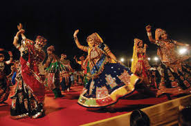

Welcome to Gujarat!

Gujarat, located in western India, is renowned for its rich cultural heritage, vibrant festivals, and
entrepreneurial spirit. The culture of Gujarat is a colorful tapestry woven from traditional customs, festivals,
arts, and culinary delights. Festivals such as Navratri, Diwali, Uttarayan (Kite Festival), and the vibrant Rann
Utsav celebrate Gujarat's religious diversity and community unity with fervor and joy.
Gujarati cuisine is known for its variety and flavors, featuring dishes like Dhokla, Khandvi, Undhiyu, and sweets
such as Jalebi, Fafda, and Ghari. The cuisine showcases Gujarat's agrarian roots and the creative use of spices
and ingredients.
Music and dance are integral to Gujarati culture, with folk forms like Garba and Raas performed during Navratri
and other festive occasions. These dances are characterized by rhythmic footwork and vibrant costumes, creating an
electrifying atmosphere of celebration.
Gujarat's architectural heritage includes splendid temples like the Somnath Temple, Dwarkadhish Temple, and Sun
Temple at Modhera, reflecting the state's religious and cultural prominence. The intricate craftsmanship of
Gujarati handicrafts such as Bandhani textiles, Patola sarees, Kutch embroidery, and traditional jewelry also adds
to the cultural richness of the state.